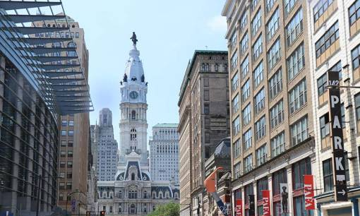

- Главная /
- Туразметки /
- Филадельфия – место начала США
Филадельфия – место начала США
Готовы поспорить, что вы и не представляли, какая история у славной Филадельфии. Город основан в 1682 году, но стал известен в XVIII веке как место встречи отцов-основателей. По данным переписи населения 2020 года, Филадельфия – один из крупнейших городов США с населением более 1,6 млн человек.
Что уж там говорить, Филадельфия просто дышит историей. Чтобы познакомиться с историей города не нужно читать скучные учебники – достаточно пройтись по улицам. Но нужно знать конкретные места и некоторые секреты!
В этой статье «ProImmigrationHouse» приводит настоящий гид по американскому городу Филадельфия. Итак, поехали!
Что уж там говорить, Филадельфия просто дышит историей. Чтобы познакомиться с историей города не нужно читать скучные учебники – достаточно пройтись по улицам. Но нужно знать конкретные места и некоторые секреты!
В этой статье «ProImmigrationHouse» приводит настоящий гид по американскому городу Филадельфия. Итак, поехали!

1. Independence Hall (Зал независимости)
Именно тут отцы-основатели обсуждали Декларацию независимости и Конституцию США. Здесь люди, навсегда изменившие карту мира, дискутировали над тем, как достойно будут жить их потомки. Здесь 4 июля 1776 года американские колонии объявили о своей независимости от Британского Королевства.

Independence Hall ( Зал независимости
)brbr
В этом месте сохранили первозданный вид. Оригинальная мебель, деревянный пол, интерьер, лепнина – все как в 1776 году. Даже цвет краски, чтобы лучше передать атмосферу места, где была провозглашена независимость.
Independence Hall ( Зал независимости
)
В этом месте сохранили первозданный вид. Оригинальная мебель, деревянный пол, интерьер, лепнина – все как в 1776 году. Даже цвет краски, чтобы лучше передать атмосферу места, где была провозглашена независимость.
В этом месте сохранили первозданный вид. Оригинальная мебель, деревянный пол, интерьер, лепнина – все как в 1776 году. Даже цвет краски, чтобы лучше передать атмосферу места, где была провозглашена независимость.
2. Liberty Bell (Колокол независимости)
Именно он звонил в день прочтения декларации, став одним из символов независимости США. Сперва он находился на шпиле Independence Hall. Его изготовили лондонские мастера в 1751 году, чтобы использовать как средство оповещения жителей Филадельфии о городских собраниях.
В 60-х годах XX века колокол стал символом свободы времен Холодной войны, оповещая о протестах и собраниях. Позже его перенесли из здания Independence Hall в соседний стеклянный павильон.
В 60-х годах XX века колокол стал символом свободы времен Холодной войны, оповещая о протестах и собраниях. Позже его перенесли из здания Independence Hall в соседний стеклянный павильон.
3. Philadelphia Museum of Art (Музей искусств Филадельфии)
Почти 100-летний музей искусств Филадельфии (построен в 1928 году) уникален тем, что в нем насчитывается более 240 тыс. экспонатов из Европы, Америки и Азии. Здесь все – скульптуры, картины, гравюры, рисунки, фотографии, доспехи и многое другое. Филадельфийский музей входит в сотню самых популярных и посещаемых музеев мира. Только за прошлый год его посетили более полумиллиона человек.
(
Музей искусств Филадельфии
).
Philadelphia Museum of Art, пожалуй, – место притяжения не только ценителей искусства в целом, но и любителей кино в частности. Наверняка вы смотрели известный фильм «Рокки». Помните, как герой Сильвестра Сталлоне выходил на пробежку и поднимался по многочисленным ступеням. Это место и есть Philadelphia Museum of Art. Поэтому справа от музея установили памятник Рокки , возле которого бесперебойно стоит очередь, чтобы сфотографироваться.
Philadelphia Museum of Art, пожалуй, – место притяжения не только ценителей искусства в целом, но и любителей кино в частности. Наверняка вы смотрели известный фильм «Рокки». Помните, как герой Сильвестра Сталлоне выходил на пробежку и поднимался по многочисленным ступеням. Это место и есть Philadelphia Museum of Art. Поэтому справа от музея установили памятник Рокки , возле которого бесперебойно стоит очередь, чтобы сфотографироваться.
5. Проспект Бенджамина Франклина
Это место славится «Аллеей дружбы». В 1976 году вдоль проспекта расположили флаги государств. Поэтому туристы из разных стран мира обязательно ищут флаг своей страны, чтобы сделать фото.
А еще Филадельфия – не только процветающий культурный город, но и кулинарный. Об этом пишет Wall Street Journal. Неудивительно! Ведь филадельфийский чизкейк известен на всю страну. Рестораны соревнуются друг с другом, желая удивить посетителей. Поэтому пусть вас не шокирует, что у филадельфийских ресторанов вам совершенно бесплатно предложат продегустировать новый вкус. Соглашайтесь!
Еще одно культурно-кулинарное место – 127-летний рынок Reading Terminal Market в центре города. Это не только проверенный источник свежих морепродуктов, мяса и сыра для местных жителей, но и магнит для туристов.
Поездка в Филадельфию не будет полной, если не оставить времени просто на прогулки по местным улицам.
А еще Филадельфия – не только процветающий культурный город, но и кулинарный. Об этом пишет Wall Street Journal. Неудивительно! Ведь филадельфийский чизкейк известен на всю страну. Рестораны соревнуются друг с другом, желая удивить посетителей. Поэтому пусть вас не шокирует, что у филадельфийских ресторанов вам совершенно бесплатно предложат продегустировать новый вкус. Соглашайтесь!
Еще одно культурно-кулинарное место – 127-летний рынок Reading Terminal Market в центре города. Это не только проверенный источник свежих морепродуктов, мяса и сыра для местных жителей, но и магнит для туристов.
Поездка в Филадельфию не будет полной, если не оставить времени просто на прогулки по местным улицам.
- Во-первых, в городе сохранена историческая застройка, в которую гармонично вписываются современные здания.
- Во-вторых, россиянам будет особо интересно посмотреть на многоквартирные дома. В Филадельфии они очень похожи на привычные для российских городов девяти-десятиэтажки. Если не американский флаг рядом, то сразу и не догадаешься, что это вы в Америке.
- В-третьих, во время прогулки вы точно заметите много мелких деталей в архитектурном облике города.
- В-четвертых , в городе интересно наблюдать за прохожими. Их яркие образы заставят обратить на себя внимание.
В Филадельфии.
Есть в Филадельфии и значительные недостатки, о которых невозможно молчать. На улицах много бездомных. Несмотря на то, что власти поддерживают работу приютов для бездомных, многие из них остаются на улице.
Есть в Филадельфии и значительные недостатки, о которых невозможно молчать. На улицах много бездомных. Несмотря на то, что власти поддерживают работу приютов для бездомных, многие из них остаются на улице.